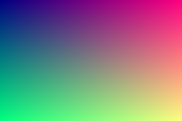

Local + remote, just like the markdown 09-images-mixed-and-edge-cases.md sample.
09-images-mixed-and-edge-cases.md

 Remote image (GitHub avatar) — may require allowance prompt
Remote image (GitHub avatar) — may require allowance prompt